🔖原文信息（编者中文重排）
📚 文献信息
▪ Dalmau-Pastor M, Malagelada F, Guelfi M, Kerkhoffs G, Karlsson J, Calder J, Vega J. The deltoid ligament is constantly formed by four fascicles reaching the navicular, spring ligament complex, calcaneus and talus. Knee Surg Sports Traumatol Arthrosc. 2024;32:3065–3075. doi:10.1002/ksa.12173
▪ 作者单位：西班牙巴塞罗那大学人体解剖与胚胎学教研室；英国伦敦皇家医院；荷兰阿姆斯特丹大学医学中心；瑞典哥德堡大学 等
▪ 文章类型：尸体解剖研究（图解论文），32 例新鲜冷冻标本；CC BY 开放获取
• 三角韧带（踝内侧副韧带）恒定由四束、两层组成，按“连到哪块骨”命名即可，不必记文献里的 16 种束
• 浅层三束都起于内踝前丘：胫舟束→舟骨、胫弹簧束→弹簧韧带、胫跟束→跟骨载距突
• 深层一束：胫距束，从内踝的关节内一侧到距骨内侧，止点和距骨内侧关节面像太极图一样互补
• 以往说胫跟束“不恒定”，很可能是解剖时剥离肌腱鞘误切了它
• 胫距束全部和胫舟束前部在关节内（滑膜外），作者推测这可能是深层三角韧带损伤更难愈合的原因
🔖研究背景（据原文引言整理）
踝扭伤大多是内翻扭伤，但扭伤后 30%～40% 留下慢性疼痛、最多 33% 发展为慢性踝关节不稳，而其中最多 40% 同时有三角韧带损伤。问题是三角韧带的解剖描述太乱：常用的“两层六束”里就有不恒定的束，各家又陆续添加，累计多达 16 种，临床报告、修复和重建时很难说清到底伤的是哪一部分。
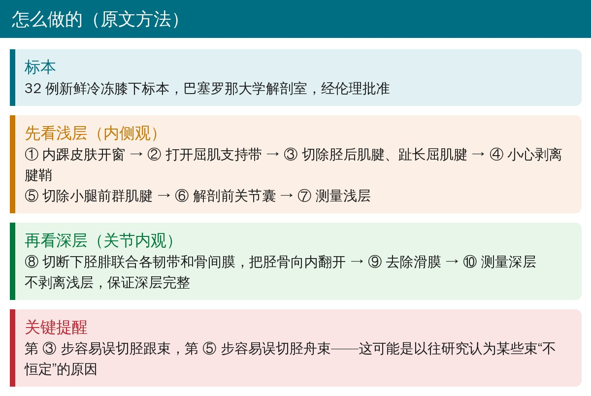
🔖研究方法（据原文整理）
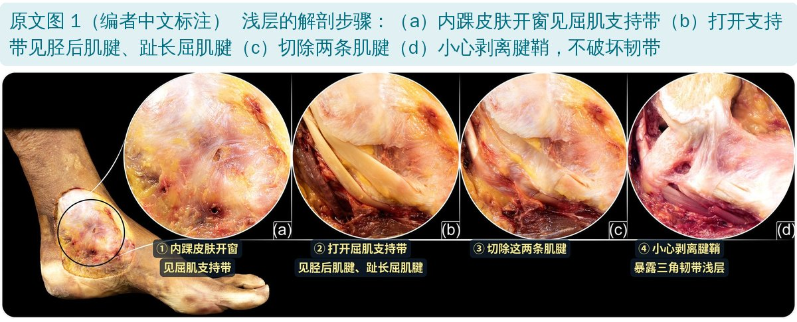
🔖原文图 1（编者中文标注） 浅层解剖的前四步
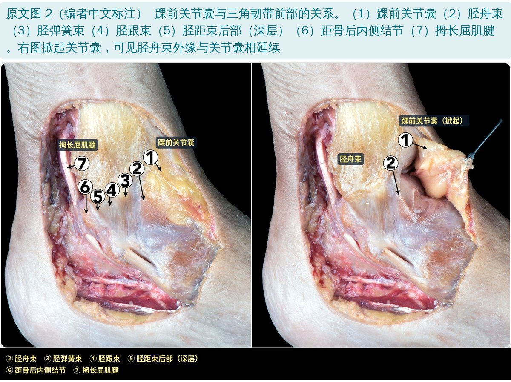
🔖原文图 2（编者中文标注） 踝前关节囊与三角韧带前部的关系；右图掀起关节囊，可见胫舟束外缘与关节囊相延续
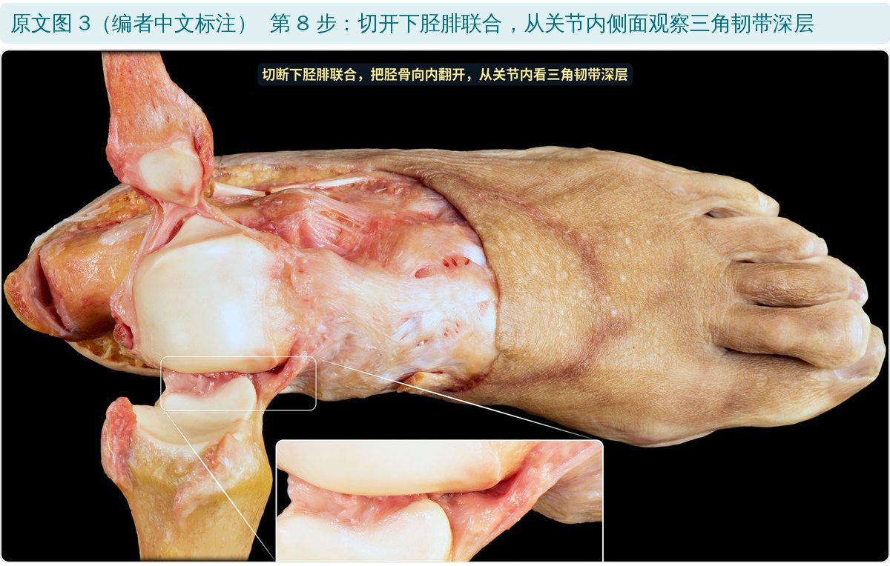
🔖原文图 3（编者中文标注） 切开下胫腓联合，从关节内观察深层
这项研究的关键在于“里外都看”：浅层从内侧（关节外）看，深层不剥离浅层，而是切开下胫腓联合、把胫骨翻开，从关节内看。作者提醒，切除胫后肌腱、趾长屈肌腱腱鞘（第 3 步）和小腿前群肌腱（第 5 步）时最容易误切胫跟束和胫舟束。
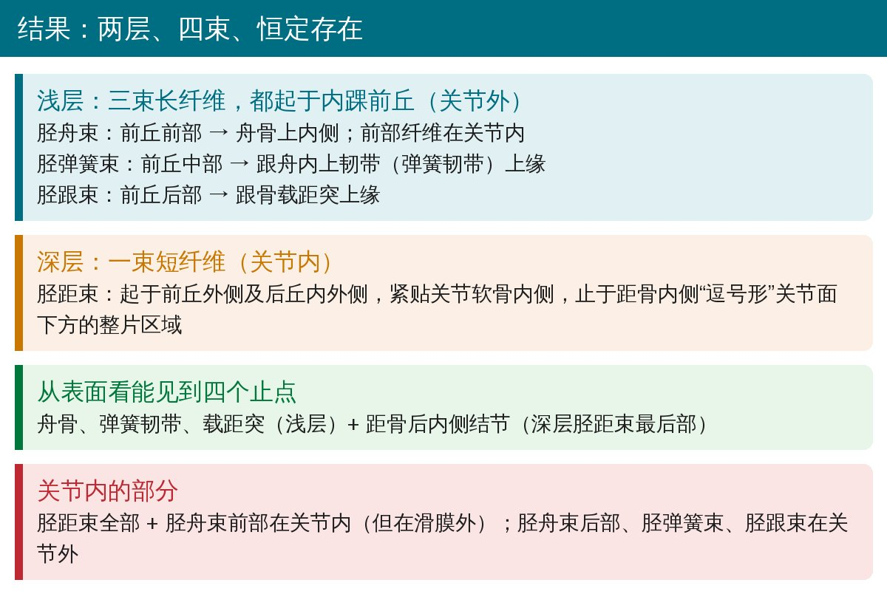
🔖四束的起止（据原文结果整理）
| 层次 | 名称 | 起点 | 止点 | 关节内/外 |
|---|---|---|---|---|
| 浅层 | 胫舟束 | 内踝前丘前部 | 舟骨上内侧 | 前部在关节内 |
| 浅层 | 胫弹簧束 | 内踝前丘中部 | 跟舟内上韧带上缘 | 关节外 |
| 浅层 | 胫跟束 | 内踝前丘后部 | 载距突上缘 | 关节外 |
| 深层 | 胫距束 | 前丘外侧、后丘内外侧 | 距骨内侧关节面下方 | 关节内 |
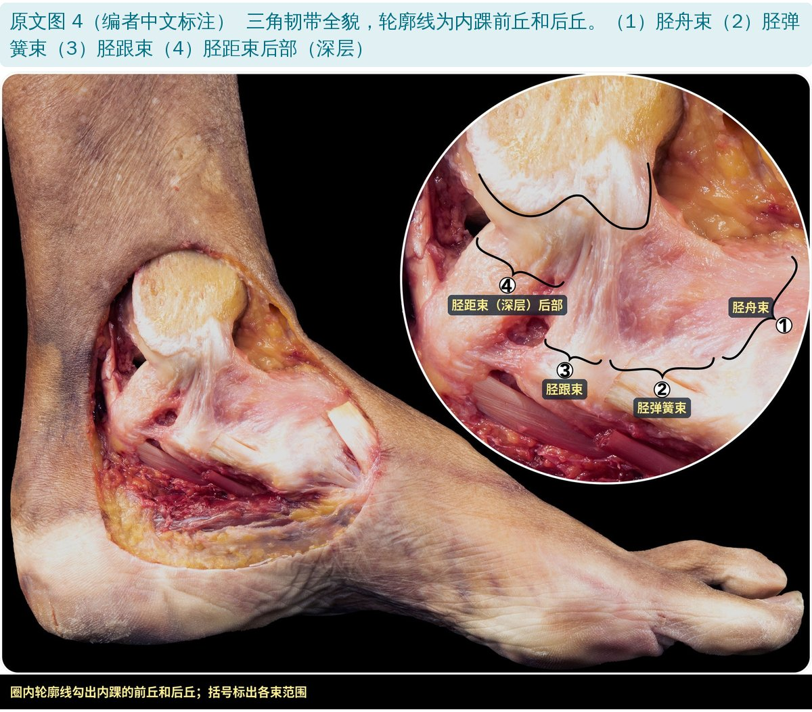
🔖原文图 4（编者中文标注） 三角韧带全貌，标出四束
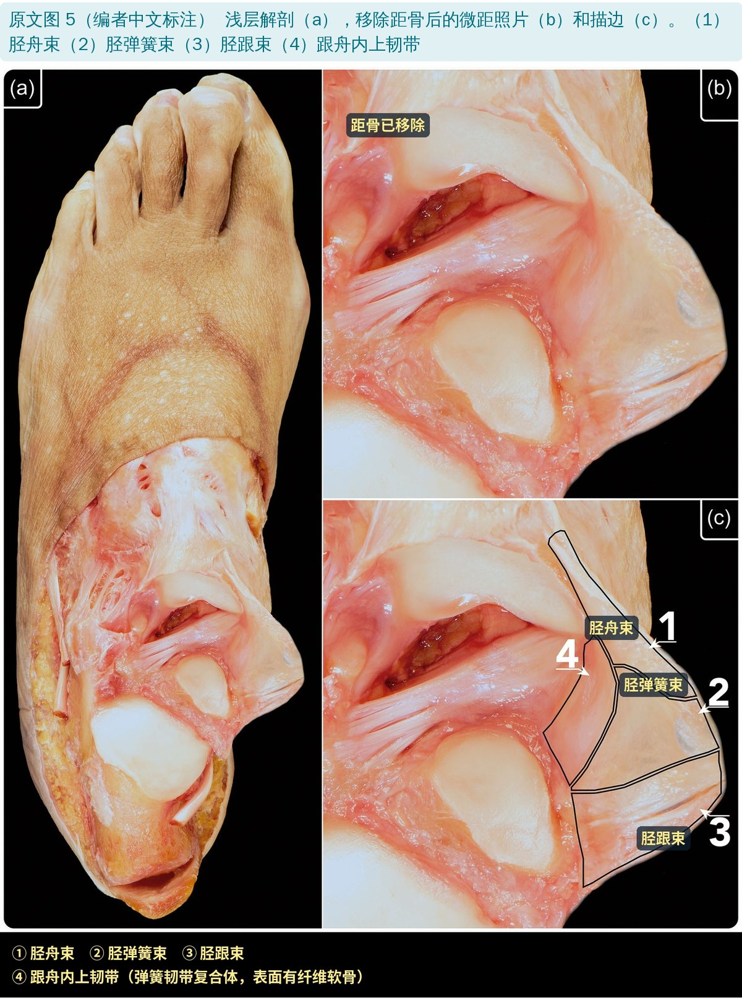
🔖原文图 5（编者中文标注） 移除距骨后看浅层三束的止点
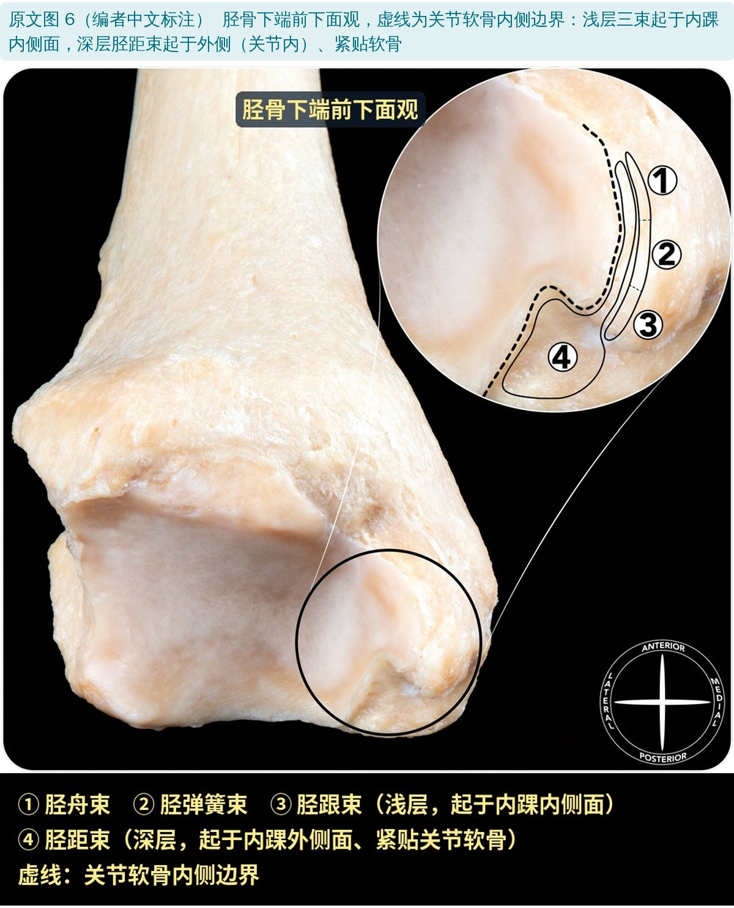
🔖原文图 6（编者中文标注） 胫骨下端：浅层起于内踝内侧面，深层起于外侧（关节内）、紧贴软骨
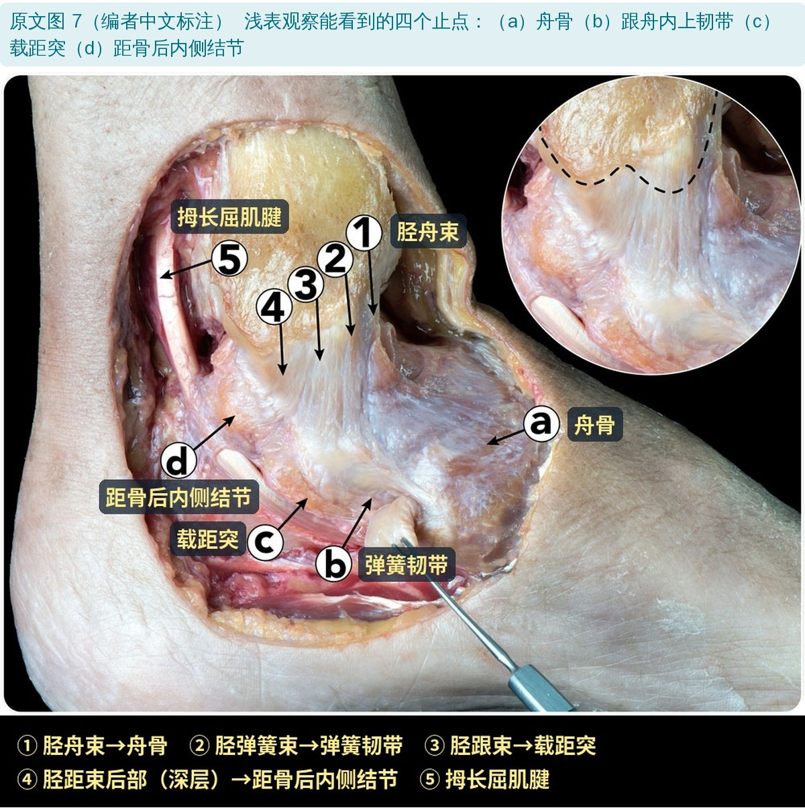
🔖原文图 7（编者中文标注） 从表面能看到的四个止点：舟骨、弹簧韧带、载距突、距骨后内侧结节
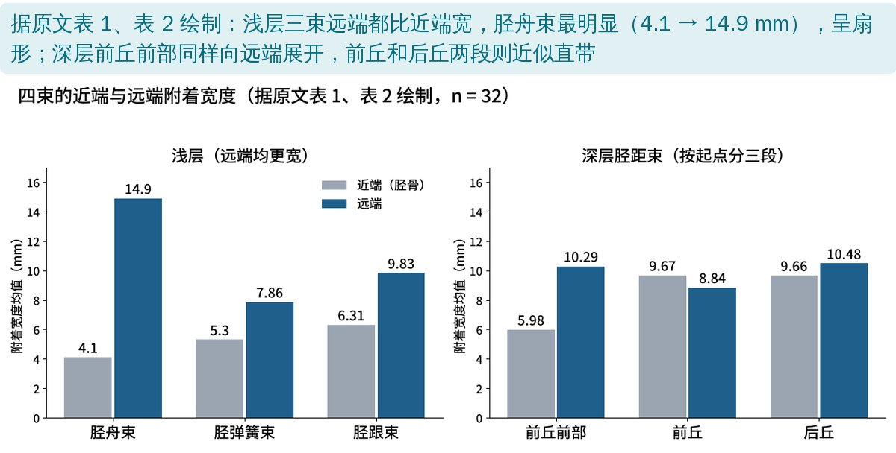
🔖据原文表 1、表 2 绘制
浅层三束都是远端比近端宽（P < 0.05），胫舟束最明显，从 4.1 mm 展开到 14.9 mm，呈扇形。深层胫距束按起点分三段：前丘前部同样向远端展开；前丘、后丘两段宽度变化不大，近似直带。
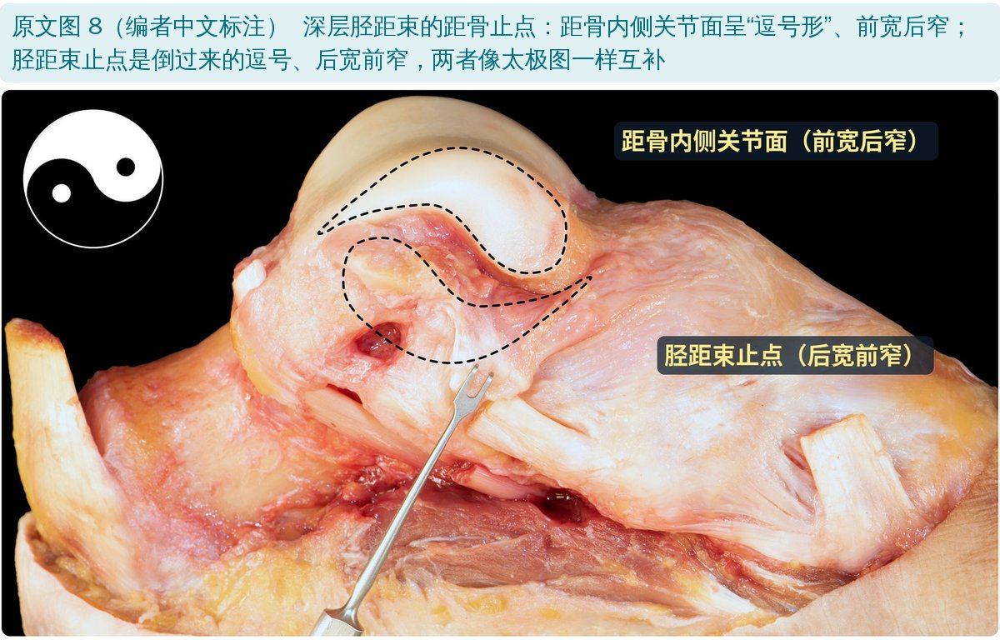
🔖原文图 8（编者中文标注） 胫距束距骨止点与距骨内侧关节面呈“太极”互补
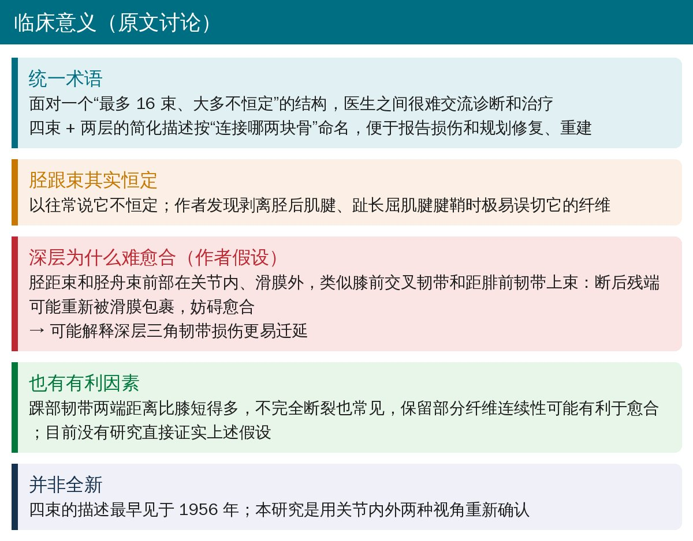
🔖讨论要点（据原文整理）
作者把深层三角韧带类比为膝前交叉韧带和距腓前韧带上束：它们都在关节内、滑膜外，断裂后残端可能重新被滑膜包裹，妨碍愈合。这只是假设，目前没有研究直接证实；而且踝部韧带两端距离短、不完全断裂常见，又可能有利于愈合。
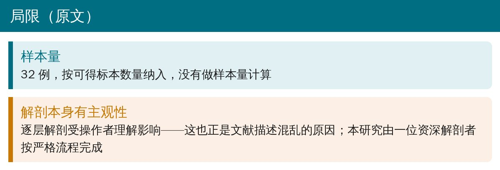
🔖研究局限（据原文整理）
• 正文说浅层每一束“所有标本都是远端比近端宽”，但表 1 胫跟束远端最小值 2.36 mm，比近端最小值 4.25 mm 还窄，说明至少有一例并非如此
• 说深层两段是“近乎等宽的直带”，表 2 却显示前丘段远端（8.84 mm）明显比近端（9.67 mm）窄，P = 0.0226
• 深层分段的定义前后不一：先把 PostC 写成“后丘”，紧接着又写成“前丘以后”
欢迎关注骨科康复小黄公众号，获取更多物理治疗的专业知识！
📄参考文献：
Dalmau-Pastor M, Malagelada F, Guelfi M, Kerkhoffs G, Karlsson J, Calder J, Vega J. The deltoid ligament is constantly formed by four fascicles reaching the navicular, spring ligament complex, calcaneus and talus. Knee Surg Sports Traumatol Arthrosc. 2024;32:3065–3075. doi:10.1002/ksa.12173
原文为 CC BY 开放获取（© 2024 The Authors）。本文为中文解读：原文图 1～8 引自原文，编者在编号旁加了中文名称，部分图下方加了中文图例条；附着宽度图据原文表 1、表 2 绘制，其余整理卡由编者根据原文撰写。